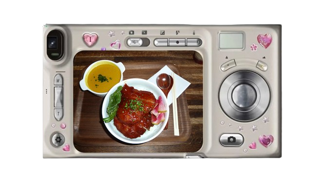

･ ༝ ･ ⋆ ˚｡⋆୨୧˚Brooklyn & Barhopping ⋆ ˚｡⋆୨୧ ･ ༝ ･
I Love
Brooklyn
Matcha
Comedy
first stop: chef katsu in brooklyn

click here for blog!🌸
chef katsu is a small japanese eatery nested in the heart of brooklyn. i ordered the pork katsu cutlet with their pumpkin soup and a strawberry hojicha drink.this was a delicious and balanced meal, and i would definitely go again!